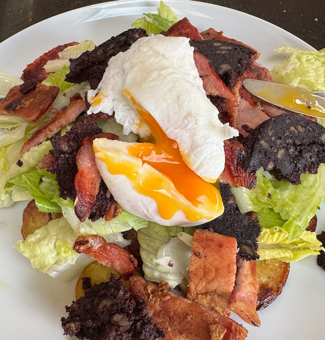

Bacon and Back Pudding Salad

I think this recipe is by Antony Worrall Thompson, and I copied it down from Ready Steady Cook on TV. Next time I think try a olive oil and red vinegar dressing. Also in the picture I forgot to put in tomatoes.
Ingredients
- 750g salad potatoes
- 220g pack bacon
- pack black pudding
- 1 cos lettuce, torn to pieces
- cherry tomatoes, quartered and salted
- 2 eggs
- dressing
- 6 tbsp sunflower oil
- 1 tbsp white wine vinegar
- 1 tsp dijon mustard
- salt and pepper
Method
Potatoes. Cut potatoes to 5mm slices. Put them on a tray with salt and olive oil. Cook in oven on 180°C for 30 min. Flip after 20 min.
Salad. Whisk the dressing ingredients together in a small bowl. If the dressing is too thick, thin with 1 tbsp of water. Mix lettuce and tomato with the dressing and set aside.
Bacon. Fry in a pan on medium heat until crispy. Drain on kitchen towel. Cut to slices.
Black pudding. In same pan cook black pudding for a few min, then flip and cook some more. Drain on kitchen towel. Cut into pieces.
Poached eggs. Bring a medium pan of water to simmer, and add 1 tbsp white vinegar. Break the two eggs into two cups. Swirl the water with a spoon then tip in the eggs. Poach for 3 min. Fish them out with a slotted spoon and drain on kitchen towel.
Assemble. Pile the potatoes on the plate, then salad, then bacon and black pudding. Put the poached egg on top.